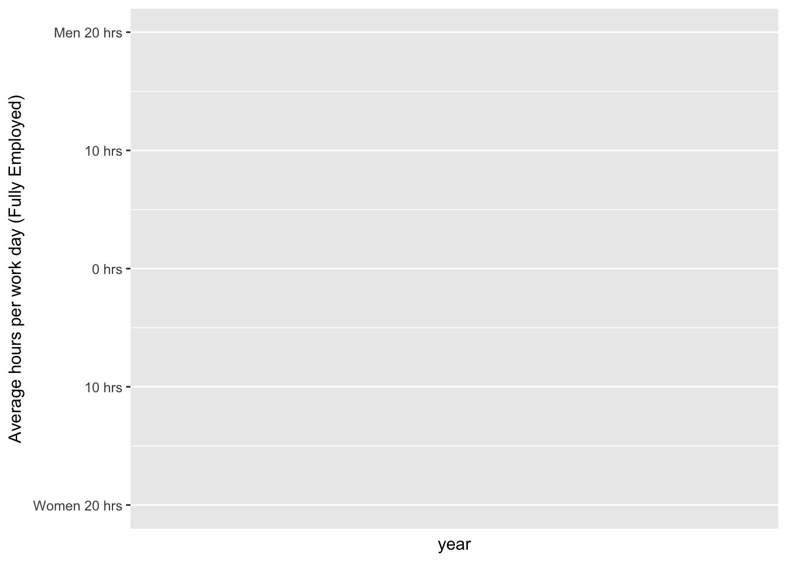

Lecture 6 geom_area and geom_ribbon
6.1 Data
The US Bureau of Labor Statistics (BLS) conducts the American Time Use Survey (ATUS). You can download the text form of the ATUS by going to the BLS data page, finding the section labelled Spending & Time Use, then clicking on the “Text Files” button on the row for the ATUS. Or by using the following link:
https://download.bls.gov/pub/time.series/tu/
6.1.1 Downloading a file from the internet
While you can manually download the files from the above URL, download.file() lets you download files from within R. The first argument is the URL of the resource you want to download. The second argument is the destination for the file. The following requests will require you to create the tu folder.
download.file("https://download.bls.gov/pub/time.series/tu/tu.txt", "data/tu/tu.txt")
download.file("https://download.bls.gov/pub/time.series/tu/tu.series", "data/tu/tu.series")
download.file("https://download.bls.gov/pub/time.series/tu/tu.data.0.Current", "data/tu/tu.data.0.Current")The file tu.txt contains the documentation for the time use (tu) survey data. Section 2 of that file provides descriptions of each of the files in the pub/time.series/tu folder. From that list we can see that tu.series will give us a list of the available series.
library(readr)
series_defn <- read_tsv("data/tu/tu.series")## Parsed with column specification:
## cols(
## .default = col_character(),
## stattype_code = col_integer(),
## sex_code = col_integer(),
## nmet_code = col_integer(),
## sjmj_code = col_integer(),
## schenr_code = col_integer(),
## work_code = col_integer(),
## elfreq_code = col_integer(),
## ecytd_code = col_integer(),
## elder_code = col_integer(),
## begin_year = col_integer(),
## end_year = col_integer()
## )## See spec(...) for full column specifications.series_defn## # A tibble: 85,277 × 43
## series_id seasonal stattype_code datays_code sex_code
## <chr> <chr> <int> <chr> <int>
## 1 TUU10100AA01000007 U 10100 01 0
## 2 TUU10100AA01000013 U 10100 01 0
## 3 TUU10100AA01000014 U 10100 01 0
## 4 TUU10100AA01000015 U 10100 01 0
## 5 TUU10100AA01000018 U 10100 01 0
## 6 TUU10100AA01000019 U 10100 01 0
## 7 TUU10100AA01000025 U 10100 01 0
## 8 TUU10100AA01000035 U 10100 01 0
## 9 TUU10100AA01000036 U 10100 01 0
## 10 TUU10100AA01000037 U 10100 01 0
## # ... with 85,267 more rows, and 38 more variables: region_code <chr>,
## # lfstat_code <chr>, educ_code <chr>, maritlstat_code <chr>,
## # age_code <chr>, orig_code <chr>, race_code <chr>, mjcow_code <chr>,
## # nmet_code <int>, where_code <chr>, sjmj_code <int>,
## # timeday_code <chr>, actcode_code <chr>, industry_code <chr>,
## # occ_code <chr>, prhhchild_code <chr>, earn_code <chr>,
## # disability_code <chr>, who_code <chr>, hhnscc03_code <chr>,
## # schenr_code <int>, prownhhchild_code <chr>, work_code <int>,
## # elnum_code <chr>, ecage_code <chr>, elfreq_code <int>,
## # eldur_code <chr>, elwho_code <chr>, ecytd_code <int>,
## # elder_code <int>, lfstatw_code <chr>, pertype_code <chr>,
## # series_title <chr>, footnote_codes <chr>, begin_year <int>,
## # begin_period <chr>, end_year <int>, end_period <chr>There is a lot here to process. The columns we care most about for now are series_id and series_title. Using select() from the dplyr library, we can show just the columns we care about.
library(dplyr)
series_defn %>%
select(series_id, series_title)## # A tibble: 85,277 × 2
## series_id
## <chr>
## 1 TUU10100AA01000007
## 2 TUU10100AA01000013
## 3 TUU10100AA01000014
## 4 TUU10100AA01000015
## 5 TUU10100AA01000018
## 6 TUU10100AA01000019
## 7 TUU10100AA01000025
## 8 TUU10100AA01000035
## 9 TUU10100AA01000036
## 10 TUU10100AA01000037
## # ... with 85,267 more rows, and 1 more variables: series_title <chr>6.1.2 Pairing down the list of variables
Let’s look for variables on sleep, work, and leisure:
series_defn %>%
select(series_title) %>%
filter(grepl("sleep", series_title, ignore.case = TRUE))## # A tibble: 1,310 × 1
## series_title
## <chr>
## 1 Avg hrs per day - Sleeping
## 2 Avg hrs per day - Sleeping, Weekend days and holidays
## 3 Avg hrs per day - Sleeping, Nonholiday weekdays
## 4 Avg hrs per day - Sleeping, Employed
## 5 Avg hrs per day - Sleeping, Weekend days and holidays, Employed
## 6 Avg hrs per day - Sleeping, Nonholiday weekdays, Employed
## 7 Avg hrs per day - Sleeping, Employed, on days worked
## 8 Avg hrs per day - Sleeping, Weekend days and holidays, Employed, on days wo
## 9 Avg hrs per day - Sleeping, Nonholiday weekdays, Employed, on days worked
## 10 Avg hrs per day - Sleeping, Employed full time
## # ... with 1,300 more rowsSince this simple search returns a ton of results, let’s further filter by ‘employed’ and ‘per day’:
series_defn %>%
select(series_title) %>%
filter(grepl("per day.*sleep.*employed", series_title, ignore.case = TRUE))## # A tibble: 154 × 1
## series_title
## <chr>
## 1 Avg hrs per day - Sleeping, Employed
## 2 Avg hrs per day - Sleeping, Weekend days and holidays, Employed
## 3 Avg hrs per day - Sleeping, Nonholiday weekdays, Employed
## 4 Avg hrs per day - Sleeping, Employed, on days worked
## 5 Avg hrs per day - Sleeping, Weekend days and holidays, Employed, on days wo
## 6 Avg hrs per day - Sleeping, Nonholiday weekdays, Employed, on days worked
## 7 Avg hrs per day - Sleeping, Employed full time
## 8 Avg hrs per day - Sleeping, Weekend days and holidays, Employed full time
## 9 Avg hrs per day - Sleeping, Nonholiday weekdays, Employed full time
## 10 Avg hrs per day - Sleeping, Employed full time, on days worked
## # ... with 144 more rowsNow let’s filter further by ‘employed full time’, ‘nonholiday weekdays’, and ‘on days worked’:
series_defn %>%
select(series_title) %>%
filter(grepl("per day.*sleep.*nonholiday weekdays.*employed full time.*on days worked", series_title, ignore.case = TRUE))## # A tibble: 6 × 1
## series_title
## <chr>
## 1 Avg hrs per day - Sleeping, Nonholiday weekdays, Employed full time, on day
## 2 Avg hrs per day - Sleeping, Nonholiday weekdays, Employed full time, on day
## 3 Avg hrs per day - Sleeping, Nonholiday weekdays, Employed full time, on day
## 4 Avg hrs per day for participants - Sleeping, Nonholiday weekdays, Employed
## 5 Avg hrs per day for participants - Sleeping, Nonholiday weekdays, Employed
## 6 Avg hrs per day for participants - Sleeping, Nonholiday weekdays, EmployedFinally, let’s filter that to exclude the ‘participants only’ group and only get the Men/Women values (not the combined totals):
series_defn %>%
select(series_title) %>%
filter(grepl("per day -.*sleep.*nonholiday weekdays.*employed full time.*on days worked,", series_title, ignore.case = TRUE))## # A tibble: 2 × 1
## series_title
## <chr>
## 1 Avg hrs per day - Sleeping, Nonholiday weekdays, Employed full time, on day
## 2 Avg hrs per day - Sleeping, Nonholiday weekdays, Employed full time, on day6.1.3 Adding more activity categories
Now let’s add ‘work’ and ‘leisure’ to our search:
activity <- series_defn %>%
select(series_id, series_title) %>%
filter(grepl("per day -.*(sleep|work|leisure).*nonholiday weekdays.*employed full time.*on days worked,", series_title, ignore.case = TRUE))
activity## # A tibble: 26 × 2
## series_id
## <chr>
## 1 TUU10101AA01000344
## 2 TUU10101AA01000423
## 3 TUU10101AA01000962
## 4 TUU10101AA01001041
## 5 TUU10101AA01003012
## 6 TUU10101AA01003097
## 7 TUU10101AA01003307
## 8 TUU10101AA01003378
## 9 TUU10101AA01003947
## 10 TUU10101AA01004011
## # ... with 16 more rows, and 1 more variables: series_title <chr>Now we should create a variable that codes each of these as either work, sleep, or leisure:
activity <- activity %>%
mutate(
activity_type = case_when(
grepl("leisure", activity$series_title, ignore.case = TRUE) ~ "Leisure",
grepl("sleep", activity$series_title, ignore.case = TRUE) ~ "Sleep",
TRUE ~ "Work"
),
sex = ifelse(grepl("Men", series_title), "Men", "Women")
)
activity## # A tibble: 26 × 4
## series_id
## <chr>
## 1 TUU10101AA01000344
## 2 TUU10101AA01000423
## 3 TUU10101AA01000962
## 4 TUU10101AA01001041
## 5 TUU10101AA01003012
## 6 TUU10101AA01003097
## 7 TUU10101AA01003307
## 8 TUU10101AA01003378
## 9 TUU10101AA01003947
## 10 TUU10101AA01004011
## # ... with 16 more rows, and 3 more variables: series_title <chr>,
## # activity_type <chr>, sex <chr>Now we can join the activity data.frame with the current data and create time series of each activity type we created.
data <- read_tsv("data/tu/tu.data.0.Current")## Parsed with column specification:
## cols(
## series_id = col_character(),
## year = col_integer(),
## period = col_character(),
## value = col_character(),
## footnote_codes = col_character()
## )data <- data %>%
inner_join(activity) %>%
group_by(year, sex, activity_type) %>%
summarize(hours = sum(as.numeric(value), na.rm = TRUE))## Joining, by = "series_id"## Warning in evalq(sum(as.numeric(c("0.33", "8.23", "-", "0.04", "0.59",
## "8.83", : NAs introduced by coercion
## Warning in evalq(sum(as.numeric(c("0.33", "8.23", "-", "0.04", "0.59",
## "8.83", : NAs introduced by coercion
## Warning in evalq(sum(as.numeric(c("0.33", "8.23", "-", "0.04", "0.59",
## "8.83", : NAs introduced by coercion
## Warning in evalq(sum(as.numeric(c("0.33", "8.23", "-", "0.04", "0.59",
## "8.83", : NAs introduced by coercion
## Warning in evalq(sum(as.numeric(c("0.33", "8.23", "-", "0.04", "0.59",
## "8.83", : NAs introduced by coercion
## Warning in evalq(sum(as.numeric(c("0.33", "8.23", "-", "0.04", "0.59",
## "8.83", : NAs introduced by coerciondata## Source: local data frame [84 x 4]
## Groups: year, sex [?]
##
## year sex activity_type hours
## <int> <chr> <chr> <dbl>
## 1 2003 Men Leisure 8.49
## 2 2003 Men Sleep 7.46
## 3 2003 Men Work 19.26
## 4 2003 Women Leisure 7.02
## 5 2003 Women Sleep 7.65
## 6 2003 Women Work 17.87
## 7 2004 Men Leisure 8.66
## 8 2004 Men Sleep 7.49
## 9 2004 Men Work 18.92
## 10 2004 Women Leisure 7.34
## # ... with 74 more rows6.2 geom_area
geom_area is useful when components that naturally add to each other:
library(ggplot2)
ggplot(data, aes(year, hours, fill= activity_type)) + geom_area() + facet_wrap(~ sex)  ## geom_ribbon
## geom_ribbon
data %>%
ggplot(aes(x = year, group = sex, fill = activity_type)) +
geom_ribbon(mapping = aes(ymin = -hours * (sex == "Women"), ymax = hours * (sex == "Men")), data = . %>% filter(activity_type == "Work"), alpha = 0.5) +
geom_ribbon(mapping = aes(ymin = -hours * (sex == "Women"), ymax = hours * (sex == "Men")), data = . %>% filter(activity_type == "Leisure"), alpha = 0.5) +
geom_ribbon(mapping = aes(ymin = -hours * (sex == "Women"), ymax = hours * (sex == "Men")), data = . %>% filter(activity_type == "Sleep"), alpha = 0.5) +
scale_y_continuous(
name = "Average hours per work day (Fully Employed)",
breaks = c(-20, -10, 0, 10, 20),
labels = c("Women 20 hrs", "10 hrs", "0 hrs", "10 hrs", "Men 20 hrs"),
limits = c(-20, 20)
)